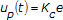

The following equations describe the basic PID algorithm. This section also provides information about how the PID VIs implement this algorithm, as well as the advanced PID algorithm.
The following simulation diagram represents the basic PID (Proportional-Integral-Derivative) controller:
|
Note��Constructing a simulation diagram like the one in the previous image requires the LabVIEW Control Design and Simulation Module. However, the PID VIs implement PID controllers for you. You do not need the Control Design and Simulation Module to build PID controllers. Refer to the National Instruments website at ni.com for more information about the Control Design and Simulation Module. |
A PID controller compares the setpoint (SP) to the process variable (PV) to obtain the error (e), as follows:
| where | e is the error |
| SP is the setpoint | |
| PV is the process variable |
The PID controller calculates the controller action, u(t) as follows:
| where | Kc is controller gain |
| Ti is the integral time in minutes, also called the reset time | |
| Td is the derivative time in minutes, also called the rate time |
This equation involves three actions that simultaneously apply to the output of the controller:
Proportional action (P) is proportional to the error (e). This term defines how quickly the controller must respond to changes in the error. The following formula represents the proportional action:

Integral action (I) is proportional to the integral of the error (e). This term is generally used to correct steady-state error and to avoid disturbances in the system. The following formula represents the integral action:
Derivative action (D) is proportional to the derivative of the error (e). This term works as a brake to the response, avoiding the system to overshoot. The following formula represents the derivative action: